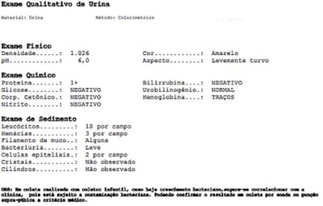

Questão 1 · Tratamento da síndrome do anticorpo antif osf olipídeo SAAF · Síndrome antif osf olípide SAF · 4000185578Diagnóstico da síndrome do anticorpo antif osf olipídeo SAAF Paciente do sexo feminino, 28 anos de idade, procura o departamento de emergência queixando-se de dor e edema no membro inferior direito. Nega passado mórbido, exceto por dois abortos espontâneos recentes. Não teve qualquer cirurgia ou imobilização recente. Ao exame físico, seus dados vitais são normais, é notável edema de membro inferior direito com dorsi exão dolorosa. No membro inferior esquerdo é observado livedo leve. Ultrassom com Doppler de membro inferior é solicitado e demonstra Trombose venosa ilíaco-femoral do lado direito. Os exames laboratoriais coletados à admissão são normais, exceto por tempo de tromboplastina parcial (PTT) três vezes acima do valor de referência e trombocitopenia leve. Beta-HCG negativo. Com relação ao quadro clínico descrito acima, considerando o diagnóstico mais provável, assinale a alternativa CORRETA em relação à terapia de escolha.
A HNF (heparina não-fracionada) para anticoagulação a curto prazo e glicocorticoide para longo prazo.
B HNF (heparina não-fracionada) para anticoagulação a curto prazo e rivaroxabana para longo prazo.
C Enoxaparina para anticoagulação a curto prazo e glicocorticoide para longo prazo.
D Enoxaparina para anticoagulação a curto prazo e warfarin para longo prazo.
Questão 2 · Fármacos e agentes relacionados a hemostasia terciária f ibrinolíticos e antif ibrinolíticos · 4000184688Concentrado protrombínico Um jovem de 21 anos é levado ao centro cirúrgico para laparotomia exploradora, em função de um ferimento por arma de fogo em face anterior do abdômen. Durante a cirurgia, foi evidenciado sangramento ativo oriundo do retroperitônio, em Zona II a direita. A equipe anestésica e cirúrgica resolve ativar o Protocolo de Transfusão Maciça. Após a realização de 1,0 grama de Ácido Tranexâmico, dois Concentrado de Hemácias e dois Plasmas Fresco Congelado, foi realizado uma tromboelastrometria que evidenciou a presença de fibrinólise. Diante do achado, a conduta mais adequada seria;
A Indicar a infusão de Beriplex
B Indicar a infusão de Hemocomplettam
C Repetir 1,0 grama de Ácido Tranexâmico
D Repetir duas bolsas de Plasma Fresco Congelado.
Questão 3 · Diagnóstico da púrpura trombocitopênica imunológica PTI · 4000184650Homem de 21 anos apresenta múltiplas sufusões pelo corpo de início há 3 dias. Nega traumas, outras manifestações clínicas, comorbidades conhecidas, uso de medicamentos e de drogas lícitas ou ilícitas. Não possui história familiar significativa. Ao exame físico, PA: 110 x 70 mmHg, FC: 68 bpm, Tax: 36,5°C. Apresenta sufusões nos membros superiores, inferiores e tronco. Sem outras anormalidades quaisquer (incluindo linfonodomegalias visceromegalias abdominais). Exames de laboratório: hemoglobina: 15,3 g/dL (VR 12-16 g/dL); Leucócitos: 5.840/mm³ (4000- 11.000/mm³); neutró los: 2.580/mm³ (1500-7000/mm³); linfócitos: 1.250/mm³ (1000-4.000/mm³); plaquetas 9.000/mm³ (150.000- 450.000/mm³); hematoscopia do sangue periférico: presença de macroplaquetas, sem anormalidades; creatinina: 0,7 mg/dL; bilirrubina outras total: 0,4 mg/dL (< 1,2mg/dL); PCR: 1,2mg/L (< 5mg/L): TSH: 1,560 mUI/L (0,5-5,0 mUI/L); RNI 1,1 PTTa 25/25; exame de urina sem alterações. Assinale a alternativa que apresenta um exame diagnóstico CORRETAMENTE indicado na propedêutica desse caso.
A Mielograma.
B Fibrinogênio.
C Anticorpos anti-HIV.
D TC de pescoço, tórax e abdome total.
Questão 4 · Diagnóstico da púrpura trombocitopênica imunológica PTI · 4000184640Quadro clínico da leucemia linf oide aguda LLA Em pediatria, são causas de anemia com plaquetopenia, EXCETO:
A Deficiência de folatos e vitamina B12.
B Leucemia linfocítica aguda.
C Leishmaniose visceral.
D Púrpura trombocitopênica autoimune (P.T.I) e púrpura de Henoch-Sehonlein.
Questão 5 · Diagnóstico da púrpura trombocitopênica imunológica PTI · 4000184635Sobre a trombocitopenia imune primária, é CORRETO afirmar que:
A A deficiência de vitamina D é diagnóstico diferencial.
B A PTI não tem relação com infecções virais agudas em crianças.
C É caracterizada com plaquetopenia abaixo de 100.000/mm³.
D Os pacientes geralmente apresentam anemia e hepatoesplenomegalia.
Questão 6 · Síndrome do anticorpo antif osf olipídeo SAAF · Síndrome antif osf olípide SAF · 4000184471Quanto às trombo lias adquiridas, especi camente quanto à síndrome de anticorpos antifosfolípides (SAF), assinale a alternativa correta.
A Anticorpos antifosfolípides não trombogênicos podem surgir de forma transitória e fugaz durante a gestação, após infecções ou traumas.
B Um dos critérios laboratoriais que define a SAF é a verificação de deficiências das proteínas C e S em duas ou mais ocasiões, com intervalo mínimo de 3 semanas entre as coletas.
C Para se estabelecer o diagnóstico de SAF, deve-se verificar a presença dos polimorfismos da enzima metilenotetrahidrofolato redutase (MTHFR), que são altamente trombogênicos.
D O diagnóstico de SAF pode ser estabelecido quando verificada a mutação do Fator V (Fator V de Leiden).
E O critério laboratorial que define a SAF é a presença de anticorpo anti-
Questão 7 · Diagnóstico da púrpura trombocitopênica imunológica PTI · 4000184135Tratamento da púrpura trombocitopênica imunológica PTI Paciente, 16 anos, previamente hígida, menarca aos 12 anos e ciclos irregulares desde então. Procura ginecologista po r sangramento menstrual excessivo há 5 dias. Ao exame clínico, apresenta Tanner 3 mamário e genital; hímen íntegro e perfurado. Exame clínico geral normal e petéquias esparsas. Exames laboratoriais apresentados. Considerando a principal hipótese diagnóstica, qual é a conduta adequada?
A Corticosteroide.
B Desmopressina.
C Progesterona.
D Estradiol.
Questão 8 · Hemof ilia · Hemof ilia · 4000183627João Lucas, dois anos, foi internado com história de aumento de volume do joelho esquerdo. Negava febre, perda de peso, astenia ou outras queixas clínicas. Exame físico estava normal, exceto pela presença de aumento de volume da articulação do joelho esquerdo. Realizada punção articular que demonstrou hemartrose. Mãe refere que paciente apresentou sangramento no nascimento dos dentes. Tendo em vista a principal hipótese diagnóstica, o exame laboratorial que mais provavelmente estará alterado é:
A prova do laço.
B tempo de protrombina.
C contagem de plaquetas.
D tempo de tromboplastina parcial ativada.
E tempo de sangramento.
Questão 9 · Diagnóstico da púrpura trombocitopênica imunológica PTI · 4000183138Introdução à púrpura trombocitopênica imunológica PTI Menina, 13 anos de idade, previamente hi Nega uso de medicamentos e casos de hemorragia em seus familiares. Exame outras alterac HCM = 31 pg; CHCM = 33 g/dL; RDW = 13%; leucócitos = 7000/mm³ ; bastões = 4%; segmentados = 60%; linfócitos = 28%; monócitos = 5%; plaquetas = 4000/mm³. Considerando a principal hipótese diagnóstica, a plaquetopenia ocorre por:
A hipoplasia megacariocítica.
B destruição no sistema reticuloendotelial.
C infiltração medular por doença linfoproliferativa.
D efeito citotóxico viral.
Questão 10 · Tratamento da púrpura trombocitopênica imunológica PTI · 4000171015O tratamento recomendado para pacientes com púrpura trombocitopênica autoimune sem febre, com sintomas leves, como petéquias e hematomas, e plaquetas = 15.000/µL é:
A imunoglobulina humana intravenosa
B observação clínica
C corticosteroide
D rituximabe
Questão 11 · Tratamento da púrpura trombocitopênica imunológica PTI · 4000169952Menina, 10 anos de idade, previamente saudável, apresenta petéquias e equimoses em membros e sobre saliências ósseas, cristas ilíacas e costelas. Ficou resfriada por 5 dias há, aproximadamente, 1 mês. Ao exame, está afebril, corada, os linfonodos são palpáveis, em regiões cervical e inguinais, menores de 0,5 cm de diâmetro, móveis e indolores; o fígado e o baço não são palpáveis. No hemograma, tem Hb 12,6 g/dL, 10.200 leucócitos com distribuição normal e contagem de plaquetas 58.000/mm³. Urina I com 1.000 hemácias/mL. Tipo sanguíneo A positivo e Coombs direto negativo. O diagnóstico provável e a conduta indicada são:
A púrpura trombocitopênica imune; realizar mielograma.
B púrpura trombocitopênica idiopática; prescrever dexametasona 40 mg/m², por 2 semanas.
C trombocitopenia idiopática; imunoglobulina anti-D 50 mcg/kg.
D trombocitopenia imune primária; esclarecer sobre a evolução autolimitada e orientar a não realizar esportes ou usar medicamentos.
E vasculite por deposição de IgA; imunoglobulina 1g / kg / dia, IV, por 2 dias.
Questão 12 · Introdução à púrpura trombocitopênica imunológica PTI · 4000169433Quando uma paciente com púrpura trombocitopênica imune primária ou púrpura trombocitopênica idiopática ( P TI ) engravida, deverá ser esclarecida sobre alguns aspectos da sua doença. Acerca desse assunto, assinale a alternativa correta.
A Trata-se de doença que envolve anticorpos antiplaquetários da classe IgM que não ultrapassam a placenta e, portanto, não impõem riscos ao feto.
B A esplenectomia durante a gestação pode ser necessária como forma de tratamento, pois melhora os níveis das plaquetas maternas, além de diminuir os anticorpos circulantes, o que evita o acometimento fetal.
C Os anticorpos antiplaquetários da classe IgG envolvidos são capazes de cruzar a membrana placentária, podendo causar trombocitopenia fetal autoimune, petéquias neonatais e até hemorragia intraventricular.
D A administração intravenosa de imunoglobulina é contraindicada durante a gestação, pois pode aumentar o risco de plaquetopenia neonatal.
E Transfusões seriadas de plaquetas durante a gravidez são necessárias para se evitar a ocorrência de hemorragia intraventricular neonatal.
Questão 13 · Tratamento da púrpura trombocitopênica imunológica PTI · 4000169064Criança, 9 anos de idade, sexo feminino, é internada com diagnóstico de púrpura trombocitopênica idiopática (trombocitopenia imune). A criança apresenta petéquias, sem sangramento ativo. A contagem de plaquetas revela 40.000 plaquetas. A melhor conduta inicial, dentre as abaixo, para este caso é:
A corticoide e imunoglobulina humana intravenosa.
B imunoglobulina humana intravenosa.
C pulso de corticoide.
D observação clínica e seguimento laboratorial.
E transfusão de plaquetas.
Questão 14 · Diagnóstico · Hematologia · Conceito · 4000167804Uma paciente de 1 ano e 6 meses de idade foi encaminhada ao pronto atendimento pediátrico por apresentar febre, há três dias, entre 38°C e 39,5 °C, sem outras queixas. A criança foi levada pela avó materna, que se mostrou bastante preocupada, pois, além da febre, notou que a criança apresenta manchas arrocheadas nos membros superiores e inferiores. A criança reside com a mãe, um irmão de 5 anos de idade e o padrasto. Ao exame físico, ela mostra-se abatida e prostrada, mas está corada e hidratada. Constataram-se FC = 120 bpm, FR = 40 irpm, SatO2 = 98% em AA, oroscopia sem petéquias, sem placas, sem lesões, otoscopia com membrana timpânica translúcida, sem abaulamento, sem secreção, ausculta cardíaca BNF, RR, 2t, sem sopro e ausculta pulmonar MVUD, sem ruídos adventícios. Também foram observados abdome RHA+, depressível, dor à palpação em baixo ventre, Blumberg e Murph negativos, sem sinais de meningismo, membros inferiores com equimoses < 5 cm e membros superiores com equimoses > 5 cm em braço esquerdo. Inicialmente foram solicitados exame qualitativo de urina com urocultura (via sondagem vesical; ainda sem resultado da urocultura) e radiogra a de membro superior esquerdo. O exame qualitativo de urina pode ser verificado a seguir. Fonte: acervo pessoal Realizou-se, ainda, radiografia que evidenciou calo ósseo em rádio e ulna esquerda, conforme a imagem a seguir. Fonte: acervo Revista Brasileira de Ortopedia. Acerca desse caso clínico e tendo em vista os conhecimentos médicos correlatos, julgue o item a seguir. Sempre que se observam equimoses em menores de 5 anos de idade, deve-se realizar uma investigação de hemo lia, por ser uma patologia bastante frequente.


A Certo.
B Errado.
Questão 15 · Hematologia · Exames laboratoriais · 4000167801Uma paciente de 16 anos de idade, com oito horas de evolução, compareceu à emergência por apresentar vertigem, diplopia e surdez. Além disso, demonstrou dé cits motores. Ao exame físico, verificaram-se SatO2 = 96% em ar ambiente, FC = 92 bpm regular e PA =180 mmHg x 100 mmHg. Tomogra a de crânio e angiotomogra a não evidenciaram malformação vascular e nem sangramento. Aos 15 anos, a paciente teve trombose venosa profunda. Em relação a esse caso clínico e aos conhecimentos médicos correlatos, julgue o item a seguir. E importante solicitar exames de fatores de coagulação, sendo o anticorpo anticardiolipina o mais prevalente em pessoas abaixo de 50 anos de idade com essa enfermidade.
A Certo.
B Errado.
Questão 16 · Diagnóstico da púrpura trombocitopênica imunológica PTI · 4000166306Mulher, 75 anos de idade, procurou o PS com petéquias e equimoses pelo corpo, gengivorragia e epistaxe. Refere vacinação para in uenza há 15 dias. O hemograma mostrou plaquetas de 5.000/mm³ (VR 150.000-450.000) sem anemia ou leucocitose/leucopenia. O mielograma evidenciou medula normal com aumento da série megacariocítica. Qual é o diagnóstico mais provável?
A Púrpura trombocitopênica trombótica.
B Púrpura de Henoch-Schönlein.
C Púrpura trombocitopênica imune.
D Coagulação intravascular disseminada.
Questão 17 · Tratamento · 4000165594Lactente, sexo masculino, 1 ano e 6 meses de idade, portador de Hemo lia A com atividade inferior a 1%, em reposição regular de fator VIII, apresentou queda da cama há cerca de 1 hora, sem perda de consciência, evoluindo com 3 episódios vômitos após a queda. Na admissão no serviço de emergência estava em bom estado geral, alerta e orientado, mas pouco colaborativo ao exame clínico, o que, segundo os pais, já é habitual em consultas pediátricas. Ao exame clínico, notado apenas hematoma de cerca de 2 cm em região occipital, sem outras alterações. Qual das alternativas abaixo contém as medidas iniciais, na sequência cronológica em que elas devem ser realizadas?
A Sedação e tomografia de crânio; administração de fator VIII (correção 100%) se sangramento intracraniano.
B Observação hospitalar por 6 horas; sedação e tomografia de crânio se surgirem alterações neurológicas.
C Administração de fator VIII (correção 100%); sedação e tomografia de crânio.
D Alta hospitalar com manutenção da reposição regular de fator VIII, porém em dose dobrada.
Questão 18 · Diagnóstico da púrpura trombocitopênica imunológica PTI · 4000145771Uma criança de 5 anos é atendida no ambulatório por gengivorragia após escovação de dentes, episódios que se repetiam há 3 dias. Havia apresentado tosse, coriza hialina, diarreia e febrícula na semana passada. Ao exame físico, a criança está em bom estado geral, observando-se a presença de petéquias em pescoço e pálpebras e hematomas em ambos os membros inferiores. Seus principais exames complementares mostram ecogra a abdominal normal, hemoglobina de 11g/dl, leucócitos de 8.300/mm3 sem formas jovens e plaquetas de 21.000/mm³. A hipótese diagnóstica mais provável é:
A Síndrome hematofagocítica.
B Leucemia linfocítica aguda.
C Leucemia mielocítica aguda.
D Púrpura de Henoch-Schönlein.
E Púrpura trombocitopênica imune.
Questão 19 · Hemostasia Secundária · Classif icação · Fisiologia · 4000143557As hemofilias A e B respectivamente têm distúrbios nos seguintes fatores de coagulação:
A VII e X.
B XI e XII.
C IX e XI.
D X e XI.
E VIII e IX.
Questão 20 · Diagnóstico · 4000140998Paciente de 39 anos, sexo masculino, com história de dor intensa no joelho, redução da mobilidade da articulação e aumento do volume local, sem associação com trauma ou lesões lacerantes. Ao procurar o serviço de ortopedia, relata ser portador de doença genética, com episódios recorrentes de sangramento de mucosa e hematomas espontâneos. Diante do quadro clínico, a principal hipótese diagnóstica é:
A talassemia minor.
B doença de von Willebrand.
C mutação do Fator V de Leinden.
D síndrome do anticorpo antifosfolípide.
E hemofilia.
Questão 21 · Tratamento da púrpura trombocitopênica imunológica PTI · 4000140678Menina, 5 anos de idade, previamente hígida, há 5 dias começou a apresentar lesões planas em membros inferiores. As lesões, representadas na imagem abaixo, não são pruriginosas, não são palpáveis e não desaparecem a digitopressão. Trazida pela mãe ao pronto atendimento, pois as lesões aumentaram e começaram a aparecer em outras partes do corpo. Nega qualquer outro sintoma associado e o restante do exame clínico não tem alterações. Considerando a principal hipótese diagnóstica, qual das alternativas abaixo contém opções de tratamento?

A Hiperhidratação endovenosa e alopurinol, seguidos de quimioterapia.
B Observação para casos mais leves, corticosteroide ou imunoglobulina para casos mais graves.
C Vitamina K para casos mais leves, plasma fresco congelado para casos mais graves.
D Expansão volêmica com NaCl 0,9% associada a cefalosporina de terceira geração.
Questão 22 · Púrpura trombocitopênica imunológica PTI · 4000140475Maria Fernanda, três anos de idade, foi levada por sua mãe a uma unidade básica de saúde com história de manchas avermelhadas no corpo há 1 dia. Refere quadro de infecção de vias aéreas superiores há 10 dias. A mãe nega febre, anorexia, adinamia ou outras queixas clínicas. Carteira vacinal completa para a idade. Ao exame físico, encontrava-se em bom estado geral, acianótica, anictérica, corada, hidratada. Presença de petéquias e equimoses principalmente em membros inferiores. Foram solicitados exames com os seguintes resultados: Hb: 11g/dL, Ht: 33%, leucócitos: 6.000/mm³ (segmentados 31%, linfócitos 57%), plaquetas: 30.000/mm³, TP com INR de 0,87 e TTPA de 30 segundos (R 92%) e urina 1 normal. A hipótese diagnóstica mais provável para essa paciente é
A doença de Wonvilebran.
B hemofilia A.
C púrpura trombocitopênica trombótica.
D leucemia linfoide aguda.
E púrpura trombocitopênica imunológica.
Questão 23 · Diagnóstico da púrpura trombocitopênica imunológica PTI · 4000139787Introdução à púrpura trombocitopênica imunológica PTI Paciente de 30 anos, previamente hígida, nota aparecimento de petéquias em membros inferiores nas últimas 2 semanas, sem qualquer outra queixa. O exame físico é normal e o hemograma mostra apenas plaquetopenia, com 30 mil plaquetas/mm3, sem alterações na série vermelha ou nos leucócitos. Sobre esse quadro clínico, é correto afirmar:
A Diante do alto risco de sangramento grave, a paciente tem indicação de internamento para transfusão de concentrado de plaquetas.
B A principal hipótese diagnóstica é de púrpura trombocitopênica imune (PTI), sendo corroborada por achado de esplenomegalia e biópsia de medula óssea mostrando baixa contagem de megacariócitos.
C O tratamento da plaquetopenia dessa paciente envolve a reposição de folato e vitamina B12.
D Frente à hipótese diagnóstica de púrpura trombocitopênica imune (PTI), está indicada a pesquisa de infecção pelo HIV, por ser potencial causa de plaquetopenia.
E Está indicada a internação hospitalar para transfusão de concentrado de hemácias e esplenectomia no mesmo internamento, já que, nessa condição, a destruição das plaquetas ocorre no baço.
Questão 24 · Púrpura de HenochSchöinleinVasculite por IgA · Púrpura trombocitopênica imunológica PTI · 4000133695Vasculite por IgA ou púrpura de HenochSchönlein PHS Idosa de 65 anos comparece à consulta com história de fadiga, gengivorragia ocasional, ao escovar os dentes, de início há três dias. Ao exame físico, petéquias e equimoses na pele – mais evidentes nas nádegas e nos membros inferiores, mas sem visceromegalias ou linfadenopatias. Nega uso de drogas. O hemograma revela: hemoglobina = 13g/dL, leucócitos = 8.350/mm3 e plaquetas = 47.000/mm³. O diagnóstico mais provável e seu tratamento, respectivamente, são:
A púrpura de Henoch-Schonlein / observação clínica .
B púrpura trombocitopênica imune / observação clínica .
C púrpura de Henoch-Schonlein / prednisona 1mg/kg/dia .
D púrpura trombocitopênica imune / prednisona 1mg/kg/dia.
Questão 25 · Pediatria · Púrpura trombocitopênica imunológica PTI · 4000132852Paciente de seis anos de idade, com quadro de equimoses em tronco e membros inferiores há sete dias, sem história de trauma, com bom estado geral, sem hepatoesplenomegalia e sem febre. Realizado hemograma: Hb: 12,5 g/dL, Ht 37%, leucócitos globais: 13.800/mm3, segmentados: 40%, linfócitos: 50%, monócitos 10%, plaquetas 90.000/mm³. Assinale a alternativa correta com relação ao caso clínico apresentado.
A O início de uso de antibiótico de amplo espectro está indicado nesse caso devido à leucocitose evidenciada no hemograma.
B O agente etiológico mais provável é o vírus da dengue, e a conduta mais correta é a hidratação oral domiciliar.
C O uso de corticoide é uma opção terapêutica nessa situação, visto que o caso do paciente é sugestivo de trombocitopenia imune.
D Esse paciente corre risco iminente de sangramento pela plaquetopenia e está indicada a transfusão de plaquetas.
Questão 26 · Diagnóstico · Avaliação dos pacientes com monoartrite · Tratamento · 4000128410Paciente, 19 anos, portador de hemo lia B, procura serviço médico com queixa de dor, calor, edema em joelho direito de início há 4 horas. Ao exame clínico, o estado geral está preservado, sem sinais de toxemia. Posição antálgica em exão de joelho direito, com calor, rubor no mesmo local, sem outras anormalidades. Frente ao quadro, marque a alternativa correta:
A A artrocentese deve ser realizada devido à suspeita de artrite séptica
B A reposição de plasma fresco congelado é o tratamento de escolha
C O uso de Prednisona está indicado para efeito anti-inflamatório
D A reposição de fator VIII recombinante na dose de 5000 UI a cada 12 horas por 3 dias é o tratamento mais eficaz
E Apenas compressa de gelo e repouso serão suficientes para resolução do quadro
Questão 27 · Diagnóstico da púrpura trombocitopênica imunológica PTI · Hematologia · 4000130278Mulher, 51a, procedente de São Luís (MA), procura Unidade Básica de Saúde após mudança para região de Campinas para retomar seguimento ambulatorial devido a plaquetopenia, diagnosticada há 6 meses em hemograma de rotina. Antecedentes pessoais: hipertensão arterial sistêmica controlada com losartana há 5 anos. Exame físico: abdome: baço percutível, mas não palpável; pele: raras petéquias em membros inferiores. Hemoglobina= 13,8 g/dL, volume corpuscular médio= 91fL, leucócitos =8,6*10⁹/L (segmentados= 69%, linfócitos 22%, monócitos 6%, eosinó los 3%), plaquetas= 30*10⁹/L. O DIAGNÓSTICO É:
A Hiperesplenismo por hipertensão portal.
B Púrpura trombocitopênica imune.
C Plaquetopenia relacionada ao uso de losartana.
D Plaquetopenia transitória relacionada a infecção viral subclínica.
Questão 28 · Diagnóstico da púrpura trombocitopênica imunológica PTI · 4000120099Olívia, 4 anos de idade, foi levada à Unidade de pronto atendimento com história de quatro dias com manchas arroxeadas no corpo. Hoje apresentou sangramento nasal. A mãe refere que sua lha apresentou febre e coriza, com diagnóstico de quadro viral, há duas semanas. Nega uso de medicações ou história de doenças crônicas. Ao exame físico, apresenta bom estado geral, presença de equimoses esparsas em tronco e membros, sem hepatoesplenomegalia ou linfonodomegalias. Hemograma: hemoglobina: 12,5 g/dL; leucócitos: 6.000/mm³; plaquetas: 20.000/mm³. Hipótese diagnóstica mais provável para Olívia, dentre as abaixo, é:
A Meningococcemia.
B Púrpura de Henoch-Schönlein.
C Púrpura trombocitopênica trombótica.
D Púrpura trombocitopênica imune.
E Síndrome hemolítico-urêmica.
Questão 29 · Hematologia · Tratamento da púrpura trombocitopênica imunológica PTI · 4000120093João, 7 anos de idade, foi levado ao pronto atendimento com história de manchas arroxeadas em tronco e membros há 3 dias. Mãe refere infecção de vias aéreas superiores há duas semanas e nega uso de medicações ou história familiar de coagulopatia. Ao exame físico, apresentava bom estado geral, presença de petéquias e equimoses em tronco e membros, sem hepatoesplenomegalia ou linfonodomegalias. Hemograma: hemoglobina: 13,0 g/dL; leucócitos: 8.000/mm³; plaquetas: 40.000/mm³. Dentre as abaixo, a melhor conduta para esse paciente, nesse momento é:
A Conduta expectante.
B Corticoide oral.
C Plasmaférese.
D Cefalosporina de terceira geração.
E Hemodiálise.
Questão 30 · Diagnóstico da púrpura trombocitopênica imunológica PTI · 4000083830Tratamento da púrpura trombocitopênica imunológica PTI Mulher de 45 anos com história de sangramento gengival há 15 dias, associada ao aparecimento de manchas roxas nas pernas, sem traumatismo prévio, nega antecedente pessoal e familiar de sangramento ou comorbidades, assim como uso de medicamentos. Está em bom estado geral, corada, normotensa e afebril. Não há linfonodomegalias ou visceromegalias, mas múltiplas petéquias em membros inferiores e nádegas. Os exames complementares mostram hemoglobina = 13,0g/dL, leucócitos = 6.300/mm³, diferencial normal e plaquetas = 12.000/mm³. As sorologias para vírus B, C e HIV são negativas, assim como o fator antinuclear. O exame de urina mostra hemácias monomór cas de 4 a 6 por campo e 1 a 2 piócitos por campo. O diagnóstico mais provável e a conduta mais apropriada, nesse momento, respectivamente, são:
A púrpura de Henoch-Schonlein / iniciar corticoide
B púrpura trombocitopênica imune / iniciar corticoide
C púrpura de Henoch-Schonlein / realizar transfusão de plaquetas
D púrpura trombocitopênica imune / realizar transfusão de plaquetas
Revisar: possível letra faltando em enunciado
Questão 31 · Diagnóstico da púrpura trombocitopênica imunológica PTI · 4000059006Tratamento da púrpura trombocitopênica imunológica PTI Uma jovem de 20 anos cehga ao pronto-socorro para avaliação de um rash nos membros inferiores. Na semana anterior, apresentou epstaxe, com duração de 2 horas. No dia anterior, teve um 2º episódio de epistaxe e notou hematomas esparsos. Ao exame físico, foram encontrados equimoses e petéquias nos membros, VCN =89fL, leucócitos normais e plaquetas = 17.000/mL. Qual é o tratamento inicial indicado para o caso?
A Transfusão de plaquetas imediata
B Imunoglobulina intravenosa
C Observação e seguimento no dia seguinte
D Prednisona
E Anti-histamínicos
Questão 32 · Diagnóstico da púrpura trombocitopênica imunológica PTI · 4000054664Introdução à púrpura trombocitopênica imunológica PTI Sobre a púrpura trombocitopênica imunológica (PTI), assinale a alternativa INCORRETA:
A A esplenectomia é a melhor opção de tratamento em pacientes que não responderam ao corticóide ou que apresentaram recaída após sua suspensão.
B Em mulheres gestantes com PTI, a via de parto preferencial é a cesariana pelo risco de sangramento de sistema nervoso central no feto.
C Devido aos riscos decorrentes ao uso de corticóide em gestantes com PTI, o tratamento de escolha deve ser a imunoglobulina humana.
D Em crianças com PTI e quadro clínico mais grave, o tratamento com corticóide poderá ser instituído após a realização do mielograma para descartar leucemia aguda.
E A imunoglobulina induz boa resposta no paciente com PTI mas é temporária.
Questão 33 · Diagnóstico da púrpura trombocitopênica imunológica PTI · 4000051384Introdução à púrpura trombocitopênica imunológica PTI Das situações a seguir a que NÃO estaria indicada a se realizar a esplenectomia em pacientes com púrpura trombocitopênica idiopática (PTI) é:
A Diagnóstico de PTI durante 6 semanas e continuam a apresentar contagens plaquetárias de menos de 10.000/mm3, sem sintomas de sangramento.
B Diagnóstico de PTI há pelo menos 3 meses e experimentaram uma resposta transitória ou incompleta à terapia primária e têm uma contagem plaquetária de menos de 30.000/mm³.
C Gestante com PTI e falha na terapia com glicocorticoides, contagem plaquetária de menos de 30.000/mm3 e sangramento gengival.
D Diagnóstico de PTI há 6 meses, contagem plaquetária de mais de 50.000/mm³ e ausência de sangramentos.
E Gestante com PTI e falha na terapia com glicocorticoides, contagem plaquetária de menos de 10.000/mm³ e ausência de sangramentos.
Questão 34 · Tratamento da síndrome do anticorpo antif osf olipídeo SAAF · Tratamento · Diagnóstico · 4000050711JBS, 29 anos, G2P1 (natimorto com 28 semanas por pré-eclâmpsia grave há 8 semanas), A1 (com 14 semanas e feto sem anormalidades há 2 anos), procura seu consultório pois apresenta desejo de gravidez e medo de não conseguir um desfecho perinatal favorável à sua próxima gestação. Nega alcoolismo, tabagismo e uso de drogas. Em sua história ginecológica, relata tratamento de doença inflamatória pélvica aos 21 anos. Nega uso de anticoncepção. Exame especular: vulva e vagina normais. Conteúdo vaginal claro, aspecto mucoide. Colo em fenda, epitelizado. Toque: corpo uterino em anteverso exão, tamanho normal. Anexos e paramétrios sem alterações. Trouxe ecogra a feita há 2 dias sem alterações e anticorpos para síndrome antifosfolipídio (SAF) realizados há 5 dias. Com relação ao caso clínico, assinale a alternativa correta.
A A utilização do AAS durante a gestação, em caso de SAF confirmado, deve ser interrompida 2 semanas antes do parto, enquanto que a enoxaparina pode ser mantida até 24 horas antes do parto, sendo que ambos podem ser reintroduzidos de 8 a 12 horas no pós-parto.
B Anticorpo anticardiolipina (ACL) IgG e IgM dosado por método Elisa é considerado fortemente positivo quando resultado acima de 40 unidades.
C Em SAF sem evento trombótico prévio, apenas com eventos obstétricos, a profilaxia realizada durante a gestação inclui uso de AAS e enoxaparina em dose terapêutica durante a próxima gestação e 6 semanas no puerpério.
D A paciente apresenta critério clínico para SAF e caso os exames de anticorpos solicitados se demonstrem alterados, pode-se realizar o diagnóstico de SAF e programar tratamento profilático com AAS e enoxaparina em sua próxima gestação.
E Em SAF sem evento trombótico prévio, apenas com eventos obstétricos, a profilaxia com AAS e enoxaparina em dose profilática deve ser realizada durante toda a gestação e durante 6 meses no puerpério.
Questão 35 · Diagnóstico da púrpura trombocitopênica imunológica PTI · 4000030582Na criança, a trombocitopenia imune primária
A é geralmente um distúrbio agudo, autolimitado e imunomediado.
B é caracterizada por trombocitopenia (plaquetas menores de 40000/mm³) isolada ou secundária.
C ocorre em 80-85% dos casos na forma persistente.
D ocorre na forma recém-diagnosticada quando a remissão se dá em menos de seis meses.
Questão 36 · Principais trombof ilias adquiridas · Trombof ilia · 4000002788Qual das doenças relacionadas é caracterizada como causadora de trombofilia secundária?
A Síndrome antifosfolípede.
B Deficiência de proteína C e S.
C Deficiência de antitrombina III.
D Resistência à proteína C ativada causada ela presença de molécula anormal do fator V Leiden.
E Mutação 20210 de protrombina.
Questão 37 · Tratamento da púrpura trombocitopênica imunológica PTI · 4000115033Paciente com diagnóstico de trombocitopenia imune primária (púrpura tombocitopênica idiopática), em uso de corticoide há 2 dias, apresentando hemorragia digestiva alta, seguida de hipotensão, teve melhora após reposição volêmica. Sobre esse caso, assinale a alternativa CORRETA.
A O uso de transfusão é totalmente contraindicado, devido ao risco de piora do quadroclínico.
B Paciente deve ser considerada refratária ao tratamento inicial, e deve ser indicadaesplenectomia.
C Paciente deve ser considerada refratária ao tratamento inicial, e deve ser indicado usode rituximabe.
D Em casos com risco de morte, deve-se considerar associação de imunoglubulina,transfusão de plaquetas e avaliação da lesão local relacionada ao sangramento.
E O uso de medidas locais, por via endoscópica, é contraindicado até contagemplaquetária acima de 100 mil plaquetas/mm³.
Questão 38 · Tratamento da púrpura trombocitopênica imunológica PTI · 4000108630Mulher, 19 anos, com estenia e manchas espontâneas pelo corpo há 5 dias. Nega sangramentos. Nega comorbidades, etilismo ou uso de medicamentos. Exame físico: presença de petéquias em membros inferiores e equimoses de 2-3 cm de diâmetro em braços e abdome. Sem outras alterações. Exames laboratoriais = Hb: 12,8 g/dl; Ht: 39%; GB: 6.200/mm³; PLQ: 18.000/mm³. Contagem de plaquetas em tubo com citrato: 6.000/mm³. TTPa (ratio): 1,0. INR: 1,1. Sorologias para HIV, hepatites B e C negativas. FAN, ACA e pesquisa de anticoagulamento lúpico negativos. Ultrassonogra a de abdome sem alterações. Qual é a conduta mais adequada?
A Imunoglobulina humana.
B Transfusão de concentrado de plaquetas.
C Plasmaferese.
D Prednisona.
Questão 39 · Diagnóstico da púrpura trombocitopênica imunológica PTI · 4000083805Menino de seis anos esteve resfriado até três dias atrás quando iniciou com artralgias em membros inferiores e superiores, apresentando di culdade para se levantar da cama. Ontem apresentou epistaxe e hoje acordou com petéquias em tórax anterior e pequenos hematomas nas coxas. Não há relatos de traumas ou práticas recente de esportes.As radiogra as de tórax, quadril e membros são normais. O hemograma mostra hemoglobina de 11 g/dl, leucócitos de 9.700/mm³, eosinó los de 2%, linfócitos de 35% e plaquetas de 54.000/mm³. O diagnóstico mais provável é:
A Dengue hemorrágica.
B Artrite idiopática juvenil.
C Leucemia linfocítica aguda.
D Púrpura trombocitopênica imunológica.
Questão 40 · Introdução à púrpura trombocitopênica imunológica PTI · 4000080720Em paciente com púrpura trombocitopênica idiopática com 60.000 plaquetas, pode- se afirmar que há:
A Indicação de esplenectomia.
B Risco de hemorragia espontânea.
C Aumento da destruição das plaquetas.
D Sequestro esplênico de plaquetas com esplenomegalia.
Questão 41 · Diagnóstico · 4000080696Quais são as manifestações hemorrágicas mais marcantes e peculiares da hemofilia?
A Grandes equimoses.
B Hemorragia do SNC.
C Hematomas importantes.
D Hemartroses.
Questão 42 · Doença de von Willebrand · Laboratório da hemostasia · Hemof ilia · 4000068810Um jovem de 20 anos procura atendimento na emergência devido à hemartrose de joelhos. Realizados exames laboratoriais , revelaram os seguintes resultados: Tempo de ativação da protrombina (TAP): 12 segundos. Atividade: 90 %. INR: 1,1. Tempo de Tromboplastina Parcial Ativado (PTT): 60 segundos. Controle: 30 segundos. Relação: 2:1. Plaquetas: 300.000/mm³. Assinale a alternativa que contém os distúrbios da hemostasia compatíveis com esses resultados de exames
A Deficiencia de vitamina K, hemofilia A e hemofilia B.
B Hemofilia A, hemofilia B e doença de von Willebrand.
C Insuficiência hepática, hemofilia A e deficiência da fator VII.
D Coagulação intravascular disseminada , hemofilia B e doença de von Willebrand.
Questão 43 · Principais trombof ilias hereditárias · 4000054386Qual é a causa mais comum de trombofilia hereditária em descendentes de europeus?
A Fator V de Leiden.
B Deficiência de proteína S.
C Deficiência de proteína C.
D Hiper-homocisteinemia.
E Níveis aumentados de Fator VIII.
Questão 44 · Síndrome do anticorpo antif osf olipídeo SAAF · Síndrome antif osf olípide SAF · Manif estações clínicas · 4000052426São manifestações da Síndrome do Antifosfolípide (SAF):
A Enxaqueca, epilepsia, anemia hemolítica Coombs negativo.
B Trombocitose, anemia hemolítica autoimune, perda fetal precoce.
C Alterações laboratoriais com tempo parcial de tromboplastina diminuído.
D Ataque isquêmico transitório, livedo reticularis, vegetação de Liebman Sacks.
E A síndorme catastrófica se caracteriza pelo envolvimento de cinco ou mais órgãos simultaneamente.
Questão 45 · Diagnóstico da púrpura trombocitopênica imunológica PTI · Hematologia · Hematologia Pediátrica · 4000050310Paciente de 3 anos de idade internado em enfermaria de pediatria com diagnóstico de trombocitopenia imune primária da infância, em repouso no leito, sem uso de medicações. Qual a alternativa contém a situação clínica mais compatível com a conduta adotada acima?
A Plaquetopenia isolada com valor de 19 mil apresentando petéquias e equimoses sem sangramento mucoso.
B Plaquetopenia isolada de 9 mil com petéquias e equimoses com sangramento mucoso.
C Plaquetas normais com púrpura palpável em membros inferiores e dor abdominal leve.
D Plaquetas normais com púrpuras palpável em áreas de pressão e sangramento gastrointestinal.
E Plaquetas de 13 mil com petéquias, hematomas e artrite em joelhos.
Questão 46 · Abortamento habitual Abortamento de repetição e insuf iciência istmocervical · 4000042942Etiologia do abortamento habitual A Síndrome do Anticorpo Antifosfolipídeo (SAF) deve ser suspeitado em:
A paciente jovem com fenômeno de Raynaud.
B idosos com tromboflebites superficiais.
C homem jovem com eritema nodoso.
D presença de aticorpo de fotossensibilidade.
E perdas fetais recorrentes no segundo trimestre da gestação.
Questão 47 · Abortamento habitual Abortamento de repetição e insuf iciência istmocervical · 4000011195Síndrome do anticorpo antif osf olipídeo SAAF Uma jovem com história de perda fetal por três vezes com menos de 10 semanas, com trombocitopenia, artralgia e enxaqueca, vai ao consultório médico com quadro de trombose venosa profunda e livedo reticular. Tem anticorpo anticardiolipina (aCL) e anticorpos anti ß2GPI em títulos elevados. Nesse caso clínico, o quadro apresentado pela paciente chama a atenção para a síndrome
A de West.
B de Budd Chiari.
C oncológica trombótica.
D do anticorpo antifosfolipídeo.
E hemolítico-urêmica.
Questão 48 · Púrpura trombocitopênica imunológica PTI · 4000006658Dadas as afirmativas sobre as doenças hematológicas e cirurgia, I. A laparoscopia é contraindicada no tratamento das PTI. II. A resposta completa à esplenectomia no tratamento das PTI pode chegar a 80%. III. O tratamento de primeira linha das púrpuras trombocitopênicas imunológicas (PTI) é a esplenectomia. Verifica-se que está(ão) correta(s)
A I, apenas.
B II, apenas.
C III, apenas.
D I e II, apenas.
E I, II e III.
Questão 49 · Hemostasia · Trombof ilia · 4000003202A insu ciência cardíaca é fator de risco para tromboembolismo venoso sendo indicado a ante-coagulação. Nestes pacientes a tríade de Virchow está frequentemente presente. Das alternativas abaixo apenas uma alternativa está CORRETA em relação aos fatores presentes nesta Síndrome.
A Obesidade mórbida; estase sanguínea periférica, hipercoagulabilidade.
B Estase sanguínea intracardíaca e periférica; lesão endotelial; status pró-trombótico.
C Hipercoagulabilidade; disfunção ventricular; hipertensão pulmonar.
D Lesão endotelial; hipercoagulabilidae; disfunção biventricular.
Questão 50 · Classif icação · Hemof ilia · 4000130207Menino, 4m, é trazido à emergência devido a volumoso hematoma em braço esquerdo. Antecedente pessoal: herniorra a inguinal com sangramento excessivo há 10 dias e coleta de exames de sangue há cinco dias para investigar o sangramento. Antecedente familiar: primo pelo lado materno com quadro semelhante. Exame físico: membro superior esquerdo com hematoma volumoso e diminuição do pulso braquial. Após coleta de provas de coagulação, a conduta foi:
A Reposição de plaquetas.
B Reposição de plasma fresco congelado.
C Reposição de crioprecipitado.
D Reposição de Fator VIII.
Questão 51 · Púrpura trombocitopênica imunológica PTI · 4000126002Graziella, 13 anos, é trazida ao pronto-socorro por epistaxe há duas horas, de grande volume. A jovem apresenta equimoses em pernas há cinco dias e sangramento periodontal à escovação dentária há três dias. Teve quadro de IVAS há sete dias, tratada com sintomáticos. Atualmente afebril, hemodinamicamente estável, ativa. Sempre foi saudável, com bom desempenho escolar. Ao exame físico: petéquias em membros inferiores, equimoses em membros superiores e inferiores, sangramento periodontal discreto e epistaxe grave. Não apresenta adenomegalias ou hepatoesplenomegalia. O hemograma revela Hb = 11,7 g/dL, leucócitos = 5 300/mm³, sem alterações ao diferencial e plaquetas = 5 000/mm³. Qual o diagnóstico mais provável e a investigação complementar indicada para o caso?
A Aplasia de medula - biópsia de medula.
B Doença de Von Willebrand - curva de agregação com cofator de ristocetina.
C Hemofilia - TP, T TPA e dosagem de fatores de coagulação.
D Púrpura trombocitopênica – sorologias, FAN, triagem neoplásica.
E Anemia hemolítica - Coombs direto.
Questão 52 · Diagnóstico da púrpura trombocitopênica imunológica PTI · 4000088522Criança de 5 anos é atendida na urgência do Hospital Municipal com história de gripe há 14 dias e, há 2 dias, surgiram manchas roxas pelo corpo. Ao realizar o exame físico, observou - se o seguinte: bom estado geral, pele com petéquias nos membros inferiores, nos braços e no abdome. Os resultados do hemograma demonstram: Hb: 11,5 mg/dL, leucócitos: 6600/mm³, segmentados 60%, eosinó los 5%, linfócitos 35% e plaquetas: 20.000/mm³. Considerando esse quadro clínico, a principal hipótese diagnóstica é:
A púrpura trombocitopênica imune.
B púrpura de Henoch-Schönlein.
C leucemia linfoblástica aguda.
D dengue hemorrágica.
Questão 53 · Púrpura trombocitopênica imunológica PTI · 4000081985Em pacientes portadores de púrpura trombocitopênica idiopática, analise as seguintes assertivas sobre a indicação de esplenectomia: I. Contagem de plaquetas abaixo de 20.000 mm³. II. Trombocitopenia sintomática. III. Paciente sem sangramento com diagnóstico de púrpura trombocitopênica idiopática há mais de seis meses. IV. Falha do tratamento clínico inicial com glicocorticoides. Quais estão corretas?
A Apenas I.
B Apenas IV.
C Apenas I e II.
D Apenas III e IV.
E I, II, III e IV.
Questão 54 · Principais trombof ilias hereditárias · 4000067303Gestante em sua quarta gestação, sexta semana gestacional, com história de três abortamentos precoces, nos quais se excluíram causas anatômicas, cromossômicas e hormonais, procurou serviço especializado no SUS para orientação e endosso de tratamento instituído pelo médico de saúde suplementar, após ter sido submetida por ele a um extenso painel de pesquisa de trombo lias hereditárias e adquiridas. Um único exame resultou alterado, a metilenotetraidrofolato redutase (MTHFR), em heterozigose. O referido colega orientou tratamento durante toda a gestação com imunoglobulina humana, heparina e injeção intralipídica, informando-a de que ela iria conseguir levar a gestação atual a termo com essas medidas. Se você fosse o responsável pelo atendimento desse serviço, daria para ela a seguinte orientação:
A manter a heparina, pois trata-se de trombofilia hereditária.
B nenhuma das orientações, pois não se configura diagnóstico de trombofilia, seja adquirida, seja hereditária
C manter a imunoglobulina endovenosa, que é o tratamento mais efetivo e consagrado.
D incluir ácido acetil salicílico 100 mg ao dia durante toda a gestação.
E manter injeção intralipídica, que é bem estabelecida por pesquisas consistentes.
Questão 55 · Diagnóstico da púrpura trombocitopênica imunológica PTI · 4000066791Menino de três anos de idade é admitido no pronto atendimento com queixa de epistaxe espontânea há algumas horas, de volume pequeno. A mãe do paciente relata história de infecção viral do trato gastrointestinal (diarreia aguda) há 2 semanas, com resolução completa. Ao exame: bom estado geral, corado, hidratado. Ausculta cardíaca e pulmonar sem alterações. Baço, fígado e linfonodos não palpáveis. Equimoses e petéquias evidentes em membros inferiores, sem outras alterações. Hemograma evidenciando: hemoglobina 13,0 g/dl; VCM 80 ; leucócitos 9.700/mm³, com contagem diferencial normal; plaquetas 15.000/mm³; 1% de reticulócitos. O diagnóstico mais provável é:
A Leucemia aguda.
B Síndrome hemolítico-urêmica.
C Púrpura trombocitopênica trombótica.
D Púrpura trombocitopênica idiopática.
E Doença de Gaucher.
Questão 56 · Hemof ilia · 4000061954As hemo lias A e B são as de ciências de fator de coagulação congênitas mais comuns e que estão relacionadas, respectivamente, à deficiência dos fatores:
A XI e XII.
B V e VII.
C VIII e IX.
D V e VIII.
E X e XII.
Questão 57 · Diagnóstico da púrpura trombocitopênica imunológica PTI · 4000054109Introdução à púrpura trombocitopênica imunológica PTI Pré-escolar de cinco anos inicia subitamente quadro de manchas roxas no corpo e sangramento gengival. Ao exame: bom estado geral, com petéquias em conjuntiva e palato, petéquias e equimoses disseminadas pelo corpo e ausência de hepatoesplenomegalia. Hemograma: hematócrito = 36%, hemoglobina = 12g/dl, leucócitos = 8.000/mm³ (B=0; E=3; M=0;M=0; B=5; S=67; L=20; M=5), plaquetas = 3.000/mm³. Qual é a hipótese mais provável?
A Leucemia linfoblástica aguda.
B Púrpura trombocitopênica idiopática.
C Leucemia mieloide crônica.
D Anemia aplástica.
E Púrpura de Henoch-Schöenlein.
Questão 58 · Púrpura trombocitopênica imunológica PTI · 4000036285Na Púrpura Trombocitopênica Idiopática (PTI) é frequente a presença de:
A Eosinofilia
B Anemia Macrocítica
C Macroplaquetas
D Neutropenia.
Questão 59 · Plaquetas · Púrpura trombocitopênica imunológica PTI · 4000036258Em relação à avaliação de uma criança com Plaquetopenia, assinale a alternativa INCORRETA:
A A Púrpura Trombocitopênica Idiopática (PTI) recentemente diagnosticada é geralmente precedida por infecções virais.
B Exames complementares tais como dosagem de anticorpo contra plaquetas podem auxiliar na confirmação diagnostica em alguns casos, mas podem ser falsamente negativos em uma parcela dos pacientes pediátricos.
C História clínica, exame físico e exame de hemograma interpretado corretamente permitem realizar o diagnótico diferencial das plaquetopenias da infância na maior parte dos casos.
D Assim que diagnosticado a PTI deve-se iniciar transfusão de plaquetas a cada 4 horas.
Questão 60 · Diagnóstico da púrpura trombocitopênica imunológica PTI · 4000033337Introdução à púrpura trombocitopênica imunológica PTI Mulher de 34 anos passou a apresentar nas últimas seis semanas equimoses espontâneas principalmente nas pernas. Informa também sangramento excessivo na última menstruação e episódio de epistaxe volumosa há cinco dias. Diz que está se sentindo bem e continua trabalhando normalmente. Sem passado mórbido de importância. Não há história familiar de doença hemorrágica. Não é tabagista e ingere bebida alcoólica apenas socialmente. Nega uso atual e recente de qualquer medicamento. Ao exame, observam-se múltiplas equimoses nas sua pernas e, em menor número, no abdome e braços. Há sangramento espontâneo nas gengivas. O exame de fundo de olho não evidencia hemorragias. Os dados vitais e o restante do exame físico estão dentro dos limites da normalidade. Hemoglobina = 12,9 g/dl (hematoscopia sem achados dignos de nota); leucócitos totais = 5.300/mm³ (contagem diferencial dentro da normalidade); plaquetas = 5.000/mm³; e RNI; PTT; função renal; íons; glicemia e bioquímica hepática dentro dos limites da normalidade. Fator antinuclear (FAN); anti-HIV e anti-HCV (vírus da hepatite C) negativos. Considerando-se o diagnóstico mais provável, é possível a rmar que plaquetopenia apresentada pela paciente é resultante de:
A Consumo excessivo de plaquetas.
B Destruição de plaquetas por autoanticorpos e possível inibição da produção/liberação dessas células pelos megacariócitos.
C Redução da produção de plaquetas devido à deficiência de ácido fólico e/ou vitamina B12.
D Redução da produção de plaquetas devido a infiltração da medula óssea por neoplasia.
Questão 61 · Púrpura trombocitopênica imunológica PTI · 4000032651Com relação à Trombocitopenia Imune Primária (PTI) marque a alternativa CORRETA:
A Além do hemograma, o aspirado de medula óssea (mielograma) deve ser realizado em todos os pacientes com PTI para excluir outros diagnósticos.
B A presença de sintomas sistêmicos, como anorexia, dores articulares ou perda de peso é comum na PTI.
C A trombocitopenia na PTI geralmente se segue a uma doença viral aguda em crianças previamente hígidas.
D Todas as crianças com contagem de plaquetas < 30.000/mm3 mesmo que sem sangramento devem receber transfusão de plaquetas pelo risco aumentado de hemorragia grave.
Questão 62 · Principais trombof ilias hereditárias · Principais trombof ilias adquiridas · 4000011242São considerados estados de Hipercoagulabilidade, EXCETO:
A Mutação do Fator V de Leiden
B Anticorpo anticardiolipina.
C Deficiência de Fator VIII.
D Deficiência de Proteína S.
Questão 63 · Trombof ilias hereditárias · Trombof ilia · Trombof ilia · 4000000076Sabe-se, hoje, que em cerca de 20% a 60% dos casos de TEV, uma mutação no fator V devido à substituição de aminoácidos (arginina por glutamina), leva a que esse fator, torne-se resistente a que proteína:
A Proteína S ativada.
B Proteína C ativada.
C Antitrombina,
D Plasminogênio.
E Heparina.
Questão 64 · Síndrome do anticorpo antif osf olipídeo SAAF · Síndrome antif osf olípide SAF · 4000126298Manif estações clínicas não critério As manifestações clínicas mais frequentemente associadas à presença do anticorpo anticardiolipina e/ou anticoagulante lúpico são:
A Anemia, leucopenia, plaquetopenia.
B Abortos, tromboses vasculares, plaquetopenia.
C AVC, anti SSA +, plaquetose.
D Leucopenia, anti SSA +, aborto.
E Plaquetopenia, fenômenos hemorrágicos, aborto.
Questão 65 · Hematologia · Hemof ilia · 4000125098Lactente de 9 meses, do sexo masculino, apresenta hematomas em joelhos e hemartrose em joelho direito, de instalação aguda, ao começar a engatinhar. Ao exame físico, não se observam outras alterações e o lactente se apresenta em bom estado geral. Qual o exame mais indicado para a avaliação diagnóstica?
A Hemograma completo.
B Tempo de sangramento.
C Prova do laço.
D Tempo de Tromboplastina Parcial Ativado (TTPA).
E Tempo de Ativação da Protrombina (TAP).
Questão 66 · Tratamento da púrpura trombocitopênica imunológica PTI · 4000105909Uma jovem de 20 anos de idade chega ao pronto-socorro para avaliação de um rash nos membros inferiores. Na semana anterior apresentou epistaxe, com duração de duas horas. Ontem teve um segundo episódio de epistaxe e também notou hematomas esparsos. Ao exame físico foram encontradas equimoses e petéquias nos membros inferiores. Sem sinais de sangramento ativo. Dados laboratoriais: Hb = 12 g/dl, VCM = 89 fl, leucócitos normais e plaquetas = 17.00/ml. Qual é o tratamento inicial indicado para o caso?
A Transfusão de plaquetas imediata.
B Imunoglobulina intravenosa.
C Observação e seguimento no dia seguinte.
D Prednisona.
E Anti-histamínicos.
Questão 67 · Diagnóstico da púrpura trombocitopênica imunológica PTI · 4000098068Mulher, 53 anos, relata há 4 meses aparecimento espontâneo de petéquias em braços e coxas, com aumento significativo e extensão para tronco e abdome há 2 semanas. Apresenta sangramento após a escovação dentária no mesmo período. Nega quadros semelhantes no passado. Há 6 meses, devido a um evento de acidente isquêmico transitório, passou a utilizar AAS 100 mg/dia. Exame físico: petéquias em tronco, abdome e coxas; abdome: baço palpável a 1 cm do rebordo costal esquerdo. Hemograma: Hb = 13,4 g/dl; VCM = 82 ; HCM = 30 pg; RDW = 13,5%; leucócitos = 8.900/mm³ (segmentados = 70%, linfócitos = 23%, monócitos = 4%, eosinó los = 3%), plaquetas = 3.000/mm³. Análise do esfregaço não mostra alterações morfológicas. O mecanismo fisiopatológico dos achados é:
A Sequestro de plaquetas no baço.
B Produção de anticorpos antiplaquetas.
C Doença clonal da hematopoiese na medula óssea.
D Inibição da ciclo-oxigenase.
Questão 68 · Síndrome do anticorpo antif osf olipídeo SAAF · Laboratório · Síndrome antif osf olípide SAF · 4000057586A síndrome dos anticorpos antifosfolípides é uma trombo lia adquirida mediada por autoanticorpos caracterizada por episódios recorrentes de trombose arterial e venosa. Um exame utilizado para o diagnóstico dessa síndrome é o anticorpo:
A Antibeta-2-glicoproteína.
B Antiaquaporina 4.
C Antitrombina.
D Antirreticulina IGA.
E Antiendomísio IGM.
Questão 69 · Púrpura trombocitopênica imunológica PTI · 4000045740Mulher, 48anos, procura o pronto atendimento relatando há 3 meses aparecimento espontâneo de petéquias em braços e coxas, com aumento significativo e extensão para tronco e abdome há 10 dias. Apresenta sangramento após a escovação dentária no mesmo período. Nega quadros semelhantes no passado. Há 8 meses, devido a um evento de acidente isquêmico transitório passou a utilizar AAS 100mg/dia. Exame físico: petéquias em tronco, abdome e coxas; Abdome: baço palpável a 1 cm do rebordo costal esquerdo. Hemograma: Hb= 13,4g/dl, VCM= 82 , HCM= 30pg, RDW= 13,5%, leucócitos=8.900/mm3 (segmentados 70%, linfócitos 23%, monócitos 4%, eosinó los 3%), plaquetas= 3.000/mm³. Análise do esfregaço não mostra alterações morfológicas. O mecanismo fisiopatológico dos achados é:
A Inibição da ciclo-oxigenase.
B Sequestro de plaquetas no baço.
C Produção de anticorpos antiplaquetas.
D Doença clonal da hematopoese na medula óssea.
E Nenhuma das respostas anteriores.
Questão 70 · Hemof ilia · 4000038055A hemo lia A e B são coagulopatias em que há de ciência dos fatores __________e ________,sendo a manifestação mais frequente __________________.Marque a alternativa que contém os dados que preenchem corretamente as lacunas na afirmação acima:
A VII e VIII, epistaxe.
B VII e IX, hemartroses.
C VIII e IX, hemartroses.
D VII e VIII, hematoma muscular.
Questão 71 · Tratamento da púrpura trombocitopênica imunológica PTI · 4000033616Quadro clínico da púrpura trombocitopênica trombótica PTT Uma senhora de 65 anos comparece ao pronto atendimento por causa de sufusões nos membros superiores não relacionadas a trauma. Sem quaisquer outras queixas atuais ou prévias. É hipertensa e faz uso regular de anlodipino 10 mg ao dia há 5 anos, estando bem controlada; sem outras comorbidades conhecidas. Ao exame, PA era de 126/74 mmHg e não havia outra alteração além das lesões cutâneas relatadas. O hemograma revelou Hg 14 g/dL, leucócitos 7450/ diferencial normal e plaquetas 6680/ exame do sangue periférico por hematoscopia não revelou anormalidades. Considerando o caso descrito, assinale a alternativa que apresenta a conduta MAIS adequada nesse caso.
A Deve-se iniciar tratamento com glicocorticoide.
B Deve-se realizar transfusão de plaquetas.
C Deve-se utilizar a imunoglobulina intravenosa como primeira escolha.
D Em caso de refratariedade, o rituximabe seria o tratamento de segunda linha mais indicado nesse caso.
Questão 72 · Hemof ilia · 4000002512Quais são as manifestações hemorrágicas mais marcantes e peculiares da hemofilia?
A Hemartroses.
B Grandes equimoses.
C Hemorragia do SNC.
D Hematomas importantes.
Questão 73 · Hemostasia · Hemostasia Secundária · Hemof ilia · 4000002053ma criança do sexo masculino de dez anos de idade com dor no quadrante inferior direito, náusea, vômito e febre. Feita a hipótese de apendicite aguda, é indicado tratamento cirúrgico. Nesse instante, os pais informam que o lho é portador de hemofilia A. Nesse caso, o que deve ser administrado ao paciente?
A Fator VII.
B Fator VIII.
C Vitamina k.
D Plasma fresco.
E Crioprecipitado.
Questão 74 · Diagnóstico da púrpura trombocitopênica imunológica PTI · 4000096585Uma menina de 3 anos é trazida em seu consultório com história de petéquias e equimoses em face, tórax, dorso e membros inferiores notadas hoje pela manhã. A mãe relata que a lha estava bem de saúde, é previamente hígida, exceto por quadro de infecção de vias aéreas superiores há cerca de duas semanas. Hemograma evidenciou plaquetas = 25.000/ul (150.000 a 450.000). Considerando a principal hipótese diagnóstica, assinale a alternativa CORRETA:
A Trata-se de doença autolimitada, com resolução em semanas ou alguns meses.
B Transfusão de plaquetas deve ser realizada com urgência.
C Tempo de protrombina e tempo de tromboplastina parcial ativada devem estar alargados.
D Hemartrose ocorre com frequência nesta doença.
Questão 75 · Tratamento da púrpura trombocitopênica imunológica PTI · 4000095369Qual o tratamento inicial de escolha para um paciente com uma púrpura trombocitopenica idiopática?
A Pulsoterapia com corticoide
B Esplenectomia
C Prednisona 1-1,5 mg/kg
D Rituximab
Questão 76 · Principais trombof ilias hereditárias · Trombof ilia · 4000059455O termo trombo lia tem sido utilizado para descrever anormalidades hereditárias e adquiridas do sistema hemostático, que predispõem a eventos trombóticos. Os estados de hipercoagulabilidade primária se relacionam a:
A Deficiência de fatores antitrombóticos como antitrombina III, proteína C e proteína S.
B Deficiência dos fatores protrombóticos como fator V de Leiden, da protrombina por mutação G20210A e fator IX elevado.
C Aumento dos fatores protrombóticos como fator V de Leiden, da protrombina por mutação G20210A, e fator IX.
D Aumento de fatores antitrombóticos como antitrombina III, proteína C e proteína S.
Questão 77 · Trombof ilia · 4000047954NÃO é uma causa de trombose de repetição em pacientes jovens:
A Deficiência de proteína C.
B Anticorpo antifosfolípide.
C Deficiência de homocisteína.
D Deficiência de antitrombina III.
E Hemoglobinúria paroxística noturna (HPN).
Questão 78 · Hemof ilia · 4000041656O principal teste laboratorial para diagnóstico da principal coagulopatia hereditária ligada ao cromossomo X é:
A TS.
B TC.
C TAP.
D T TPa.
E T T.
Questão 79 · Síndrome do anticorpo antif osf olipídeo SAAF · Diagnóstico · Laboratório · 4000028573Paciente feminina, 17 anos, com histórico de atropelamento aos 14 anos, tendo cursado com amputação de membro inferior direito. Há 30 dias, desenvolve quadro de eritema difuso em colo e rosto. Concomitante, apresenta quadro de dor articular com fadiga e emagrecimento. Tem histórico familiar de esclerose múltipla. Procura assistência médica e exames iniciais mostram Hb de 9,8 g/dl (VR 12,0 – 16,0 g/dl); Ht 26,3% (VR 36 – 46%); Leucócitos totais= 2900 cel/ mm³ (VR 5000 – 1000 cel/ mm³, com bastões de 2% (VR 0 – 1000 cel/ mm³) Linfócitos de 15% (VR 1000 – 5000 cel/mm³); Plaquetas 90.000/ mm³ (VR 140000 – 400000/ mm³); Glicemia de 70 mg/dl; Ferro sérico= 29 mcg/dl (VR 60 – 180 mcg/ dl);VHS 1a hora= 75 mm (VR 0 -15 mm); VHS 2a hora= 120 mm (até 25 mm); Anticoagulante lúpico=reagente (VR ausência de anticoagulante lúpico), Anticardiolipina IgG reagente; Anticardiolipina IgM não reagente; FAN reagente misto 1/1280 nuclear pontilhado no e 1/640 nucleolar pontilhado com placa meta sária reagente. EAS telescopado, com proteinúria 24h de 1278 mg/ 2300 ml. Assinale a questão correta.
A A presença do anticoagulante lúpico é patognomônico e confirma o diagnóstico de SAF (Síndrome do Anticorpo Antifosfolipídeo).
B O Anticorpo anticardiolipina é mais específico e menos sensível que o Anticoagulante lúpico para o diagnóstico de SAF.
C A paciente em questão não pode ser considerada portadora de SAF (Síndrome do Anticorpo Antifosfolipídeo).
D A SAF é uma trombofilia adquirida rara, devendo ser aventada somente nos pacientes sabidamente com alguma doença autoimune.
Questão 80 · Síndrome do anticorpo antif osf olipídeo SAAF · Laboratório · Síndrome antif osf olípide SAF · 4000109702Qual dos elementos abaixo NÃO faz parte da Síndrome Antifosfolípide?
A Trombose arterial ou venosa.
B Abortamentos de repetição.
C Esteato-hepatite.
D Presença de anticoagulante lúpico.
Questão 81 · Tratamento da púrpura trombocitopênica imunológica PTI · 4000106764Mulher, 30 anos, refere sangramento gengival às escovações há 15 dias. Nega antecedente pessoal e familiar de sangramento. Faz uso de contraceptivos orais. Refere etilismo social e nega tabagismo. Exame físico: BEG, corada, hidratada, anictérica, afebril, acianótica. Sem linfonodomegalias. Presença de múltiplas petéquias em tronco e membros. Ausculta cardíaca e pulmonar sem alterações. Abdome indolor, sem visceromegalias. Hemograma: Hb = 13,7 g/dl; Ht = 44%; VCM = 88 ; leucócitos = 6,3 x 10³/µl; neutró los = 4,9 x 10³/µl; linfócitos = 1,4 x 10³/µl; plaquetas = 12 x 10³/µl; contagem de reticulócitos = 1%. Esfregaço do sangue periférico: plaquetas reduzidas em número, sem outras alterações. Sorologias para HBV, HCV e HIV negativas. FAN negativo. TSH normal. Ultrassonografia de abdome sem alterações. Qual é a conduta mais apropriada no momento?
A Imunoglobulina humana.
B Plasmaférese.
C Prednisona.
D Transfusão de plaquetas.
Questão 82 · Tratamento da púrpura trombocitopênica imunológica PTI · 4000076202Em consulta, mulher de 38 anos, sem comorbidades, refere o aparecimento de manchas de coloração vermelho- arroxeadas no corpo e sangramento nasal leve e esporádico. Ao ser questionada pelo médico, relata que durante um exame admissional, há cerca de cinco anos, foi identi cada uma plaquetopenia (40 mil plaquetas) em seu hemograma. Naquela ocasião, o médico recomendou que ela procurasse um hematologista, mas como não apresentava nenhum sintoma, não seguiu com a investigação. Na última consulta, o médico solicitou novo exame laboratorial, que revelou 30 mil plaquetas. Levando em consideração a hipótese diagnóstica mais provável, é CORRETO afirmar que:
A Há indicação imediata de esplenectomia.
B A esplenectomia pode ser necessária, mas deve-se primeiro tentar o tratamento com corticoide.
C A esplenectomia deveria ter sido realizada há cinco anos, pois a paciente já apresentava menos de 50 mil plaquetas na ocasião.
D Não há indicação de esplenectomia, mas deve ser realizada a internação da paciente para hidratação vigorosa e transfusão de plaquetas.
Questão 83 · Diagnóstico da púrpura trombocitopênica imunológica PTI · 4000059560Tratamento da púrpura trombocitopênica imunológica PTI Sueli, de 4 anos, com história de manchas roxas em todo o corpo, há 24 horas. Recebeu reforço da tríplice viral há 15 dias. Ao exame, encontra-se afebril e com petéquias e equimoses disseminadas. Tem hemograma com Hemoglobina 12,5 g/dl; Leucócitos 8.500/mm3; Plaquetas 50.000/mm3. Além de orientar a família sobre o curso clínico da doença e contraindicar medicações que inter ram na coagulação sanguínea e injeções intramusculares, qual a conduta mais apropriada para o caso?
A Prednisona 2 mg/kg/dia durante 15 dias.
B Pulsoterapia com metilprednisona 30 mg/kg/dia durante 3 dias.
C Imunoglobulina humana 1 g/kg/dia durante 2 dias.
D Imunoglobulina anti-D 50 mcg/kg dose única.
E Expectante.
Questão 84 · Diagnóstico da púrpura trombocitopênica imunológica PTI · 4000049622Tratamento da púrpura trombocitopênica imunológica PTI Paciente feminina, 23 anos, hígida, procura a emergência devido à "alergia" na perna. Você avaliou e viu que apresentava petéquias em MMII, com o restante do exame síco normal. Paciente nega qualquer tipo de sangramento. Você solicitou um Hemograma e veio o seguinte resultado: Hb: 12, 8 g/dl. Leucócitos: 6200/mm3 (diferencial normal). Plaquetas: 26.000/mm3 (com revisão microscópica). A conduta terapêutica CORRETA mais adequada é:
A Transfundir plaquetas.
B Repetir contagem plaquetária no citrato.
C Realizar aspirado de medula óssea.
D Iniciar corticoide.
E Indicar plasmaférese.
Questão 85 · Hemof ilia · 4000049610Assinale a opção INCORRETA sobre hemofilia:
A Embora se trate de doença hemorrágica hereditária, seu diagnóstico não pode ser excluído pela ausência de história familiar de manifestações hemorrágicas.
B As manifestações hemorrágicas mais comuns são as hemartroses e, nos pacientes com hemofilia grave, usualmente começam aos dois ou três anos de idade.
C A gravidade da doença é diretamente proporcional ao grau de deficiência do fator VIII ou IX, de modo que pacientes com hemofilia leve raramente apresentam sangramentos espontâneos.
D A intensidade do prolongamento do tempo de protrombina irá depender da gravidade da doença.
E Todo paciente com cefaleia não habitual e intensa deve ser investigado quanto a presença de sangramento intracraniano e, na sua suspeita, imediatamente tratado com reposição de fator.
Questão 86 · Síndrome do anticorpo antif osf olipídeo SAAF · Síndrome antif osf olípide SAF · 4000021014Manif estações clínicas não critério Todos os achados abaixo estão associados à presença de anticorpos antifosfolipides, EXCETO:
A Perda fetal, eclâmpsia e acidentes vasculares encefálicos.
B Livedo reticularis, acidentes vasculares encefálicos e trombose venosa.
C Embolia arterial, teste falso-positivo para VDRL e amaurose fugaz.
D Perda fetal, livedo reticularis e fotossensibilidade.
Questão 87 · Púrpura trombocitopênica imunológica PTI · 4000120162Criança de três anos de idade, previamente hígida, inicia com lesões purpúricas em região glútea, membros inferiores e face, além de hematúria discreta. O pai relata coriza serosa e tosse há cerca de 17 dias. Ht 34,8%; Hb 11,7 g/dl; Leucócitos 10.000/mm³ (eosinó los 2%, bastões 1%, segmentados 30%, linfócitos 65%, monócitos 2%); contagem de plaquetas 18.000/mm³; TAP 80%; tempo parcial de tromboplastina ativada de 25 segundos (controle de 24 segundos). Assinale a alternativa que apresenta CORRETAMENTE a principal hipótese diagnóstica.
A Púrpura de Henoch Shönlein.
B Leucemia linfoblástica aguda.
C Púrpura trombocitopênica imune.
D Síndrome hemolítico urêmico.
E Síndrome de Wiskott-Aldrich.
Questão 88 · Diagnóstico da púrpura trombocitopênica imunológica PTI · 4000119132MHS, 24 anos, sexo feminino, encontra-se assistomática há 5 meses, quando foi submetida a uma extração dentária e apresentou abundante sangramento logo após procedimento. Já havia sido submetida anteriormente a este procedimento sem complicações. Há 2 meses iniciou quadro de epistaxe e gengivorragia à escovação de dentes e há cerca de 3 semanas iniciou com quadro de lesões puntiformes avermelhadas pelo corpo, principalmente em MMII, e aparecimento de manchas roxas por todo o corpo. Há 1 semana apresenta-se com fraqueza intensa, tonturas, zumbido e dispneia. Procurou um PS que fez encaminhamento para este ambulatório. Nega historia familiar. BEG, moderadamente descorada, afebril, acianótica, anictérica, hidratada. PA: 110 x 60 mmHg, FC: 110 bpm, Mucosas: úmidas, descoradas, petéquias em palato, hemorragia conjuntival bilateralmente. Pele: petéquias em MMII e tronco. Equimoses em MMSS e MMII. Palidez cutânea. Sem adenomegalias. MVFD s/RA. RCR em 2T s/S. Abdome: sem viscomegalias, sem dor à palpação. Exames laboratorias: Hb: 10 g/dl Ht: 30% Gb: 7000, sem desvio. Plaqueta: 25000 mm³, Ferritina: 10 µ/L, Ferro sérico: 19 µg/dl, Saturação de ferro: 10%, CD: negativo, Anti-HIV e anti-HCV: negativo. Punção de Medula Óssea: Medula levemente hipercelular com relação leucoeritroblática 1:1. Série vermelha moderadamente hipercelular. Série leucocitária sem alterações. Série megacariocítica abundante no esfregaço. Qual a principal hipótese diagnóstica:
A Leucemia mieloide aguda.
B Púrpura trombocitopênica idiopática.
C Doença de Von Willebrand.
D Síndrome de Bernard-Soulier.
E Trombastenia de Glanzmann.
Questão 89 · Síndrome do anticorpo antif osf olipídeo SAAF · Laboratório · Síndrome antif osf olípide SAF · 4000114250Mulher, 25 anos, portadora de lúpus eritematoso sistêmico diagnosticado há dois anos, evoluiu com episódio confirmado de trombose venosa profunda em membro inferior esquerdo após iniciar inadvertidamente anticoncepcional hormonal oral de alta dosagem. Três meses após concluir o período de anticoagulação plena com varfarínicos, realizou coagulograma que evidenciou TTPa alargado, que não corrigiu após o teste da mistura. O anticorpo mais provavelmente associado a este quadro é:
A Antifator VIII.
B Antibeta-2-glicoproteína l.
C Anti-DNAds.
D Anti-Ro.
E Anti-U1-RNP.
Questão 90 · Principais trombof ilias hereditárias · Principais trombof ilias adquiridas · 4000093233Os estados de hipercoagulação, conhecidos como trombo lias, têm origem congênita ou adquirida. A esse respeito, considere as seguintes assertivas: I. Na maioria das vezes, a trombose ocorre devido a mecanismos multifatoriais, sendo os "gatilhos" de origem congênita ou adquirida. II. As trombofilias congênitas são mais associadas a complicações tromboembólicas arteriais do que a venosas. III. A investigação de trombofilias deve ocorrer antes do início da anticoagulação oral com varfarina. Está/Estão correta (s) a (s) afirmativa (s):
A I, apenas.
B II, apenas.
C I e III, apenas.
D II e III, apenas.
E I, II e III.
Questão 91 · Diagnóstico da púrpura trombocitopênica imunológica PTI · 4000082944Tratamento da púrpura trombocitopênica imunológica PTI Uma mulher de 36 anos procura atendimento médico devido à epistaxe e às petéquias difusas. Exames laboratoriais (sangue): hemoglobina 13 g/dl; hematócrito: 39%; leucócitos: 9.800/microlitro e plaquetas: 12.000/microlitro. Realizado aspirado de medula óssea que demonstrou aumento no setor megacariocítico. Assinale a alternativa CORRETA:
A Trata-se de púrpura trombocitopênica imunológica, que pode ser tratada com corticosteroides, imunoglobulina intravenosa, azatioprina e/ou rituximabe.
B Trata-se de púrpura trombocitopênica imunológica, que pode ser tratada com corticosteroides, imunoglobulina intravenosa, azatioprina e/ou infliximabe.
C Trata-se de púrpura trombocitopênica trombótica, que pode ser tratada com corticosteroides, imunoglobulina intravenosa, azatioprina e/ou adalimumabe.
D Trata-se de púrpura trombocitopênica trombótica, que tem como tratamento de escolha a plasmaférese.
Questão 92 · Principais trombof ilias adquiridas · 4000053869As trombo lias são classificadas em hereditárias e adquiridas. Dentre as alternativas abaixo, assinale a correspondente à trombofilia adquirida.
A Deficiência de antitrombina.
B Deficiência de proteína S.
C Deficiência da proteína C.
D Mutações genéticas do fator V (fator de Leiden).
E Síndrome antifosfolípide (SAF).
Questão 93 · Hemof ilia · 4000042610As hemofilias podem ser congênitas ou adquiridas. Sobre as hemofilias adquiridas, assinale a resposta ERRADA:
A Podem ser relacionadas às neoplasias e a doenças autoimunes como artrite reumatoide, lúpus e S. de Sjögren.
B Medicamentos como as penicilinas também podem desencadear estas hemofilias.
C São as hemofilias mais comuns e já se iniciam na primeira infância.
D Nos adultos se manifestam como hemorragias súbitas, graves.
E Podem acometer também pele, tecido celular subcutâneo e músculos.
Questão 94 · Diagnóstico da púrpura trombocitopênica imunológica PTI · 4000010204Introdução à púrpura trombocitopênica imunológica PTI A Púrpura Trombocitopênica Imunológica (PTI) NÃO é causada por:
A leucemia linfoide crônica.
B virose.
C pneumonia bacteriana.
D lúpus eritematoso sistêmico.
E medicamentos.
Questão 95 · Abortamento habitual Abortamento de repetição e insuf iciência istmocervical · 4000129096Síndrome do anticorpo antif osf olipídeo SAAF Mulher de 25 anos procura atendimento médico por quadro de plaquetopenia e livedo reticular. Refere antecedente de três abortos espontâneos, consecutivos. Apresenta EAS normal, FAN e Fator Reumatoide negativos. Considerando-se a principal hipótese diagnóstica, quais exames laboratoriais deverão ser solicitados a esta paciente?
A Anti-DNA e C4.
B Anti-Ro e anti-La.
C Anti-CCP e ANCA.
D Anticoagulante lúpico e anticardiolipina.
Questão 96 · Púrpura trombocitopênica imunológica PTI · 4000122697Assinale a alternativa CORRETA sobre a Púrpura Trombocitopênica Imunomediada (PTI).
A Quando houver contagem plaquetária < 30.000/mm³, o tratamento deve incluir transfusão de plaquetas para profilaxia de hemorragia intracraniana.
B No adulto, ocorre predominantemente em pessoas do sexo masculino.
C Contagem plaquetária da parturiente prediz a contagem plaquetária do recém- nascido.
D No adulto, pode ser secundária a infecções por Helicobacter pylori, vírus da hepatite C, citomegalovírus e HIV.
E Na infância, apresenta gatilho ambiental e costuma cronificar em 80% dos casos.
Questão 97 · Introdução à púrpura trombocitopênica imunológica PTI · 4000105616Assinale a alternativa mais adequada sobre Trombocitopenia Autoimune (TA):
A A TA é um distúrbio em que existe diminuição da produção de plaquetas.
B A TA, caso existam sinais de sangramento por plaquetopenia isolada, deve ser tratada, inicialmente, com ácido ascórbico em doses de 1 grama por 2 ou 3 vezes ao dia.
C A TA, caso existam sinais de sangramento por plaquetopenia isolada, deve ser tratada, inicialmente, com ácido folínico 15 mg por 2 meses.
D A TA é um diagnóstico de exclusão num paciente com plaquetopenia isolada. Considerar, como causa da plaquetopenia, novos medicamentos em uso, bem como infecção por HIV e/ou Hepatite C.
E A TA, caso existam sinais de sangramento por plaquetopenia isolada, deve ser tratada, inicialmente, com polivitamínico B endovenoso até ocorrer melhora do sangramento.
Questão 98 · Tratamento da púrpura trombocitopênica imunológica PTI · 4000081634Mulher, 24 anos de idade, procura pronto atendimento referindo há 4 dias pontos vermelhos pelo corpo evoluindo hoje com epistaxe. Há uma semana teve tosse, odinofagia e febre baixa, resolvidos. Ao exame: bom estado geral, afebril, hidratada, anictérica, eupneica, ausculta cardíaca e respiratória normais, abdome inocente, sem visceromegalias, presença de epistaxe discreta e púrpuras em membros inferiores e abdome. Exames laboratoriais: Hb = 13,8 g/L; leucócitos: 6200/mm³, sem desvio; plaquetas: 23.000/mm³; INR = 1,0; TTPA = 36 segundos (controle 34 segundos). Considerando a principal hipótese diagnóstica, assinale a alternativa CORRETA
A A transfusão de plaquetas está indicada neste caso devido ao nível crítico desse elemento associado a sangramento mucoso.
B Deve-se iniciar pulsoterapia, com imunoglobulina anti-D, 1 g/dia, por 3 a 5 dias, ou até as plaquetas atingirem 50.000/mm³
C A imunoglobulina humana é contraindicada nestes casos, já que sua porção Fc liga-se às plaquetas em circulação, levando à piora da plaquetopenia.
D Em caso de sangramento ameaçador à vida está indicada imunossupressão com ciclofosfamida ou rituximabe como primeira escolha.
E A maioria dos pacientes responde bem à prednisona por via oral, após 2 a 4 semanas de tratamento.
Questão 99 · Hemof ilia · 4000071528Homem de 31 anos de idade, com hemo lia tipo A, é admitido com hematúria persistente. Ele nega traumas recentes ou história de qualquer doença geniturinária. O exame é normal. O hematócrito é de 28%. Todas as medidas a seguir são tratamentos para a hemofilia tipo A, EXCETO:
A Desmopressina (DDAVP).
B Plasma fresco congelado.
C Crioprecipitado.
D Fator VIII recombinante.
E Plasmaférese.
Questão 100 · Principais trombof ilias adquiridas · Síndrome antif osf olípide SAF · 4000046731Mulher de 25 anos desenvolve hemiparesia esquerda há 48 horas. Tem antecedente de trombose Venosa Profunda (TVP) há 3 anos atrás, tendo sido tratada com anticoagulação plena por 6 meses. Qual é a patologia mais provável de estar causando estas alterações? Respostas: 1 12 23 34 45 56 67 78 89 100
A Fibrilação atrial
B Esclerose múltipla
C Síndrome do anticorpo antifosfolípide
D Prolapso de valva mitral
E Glioblastoma multiforme